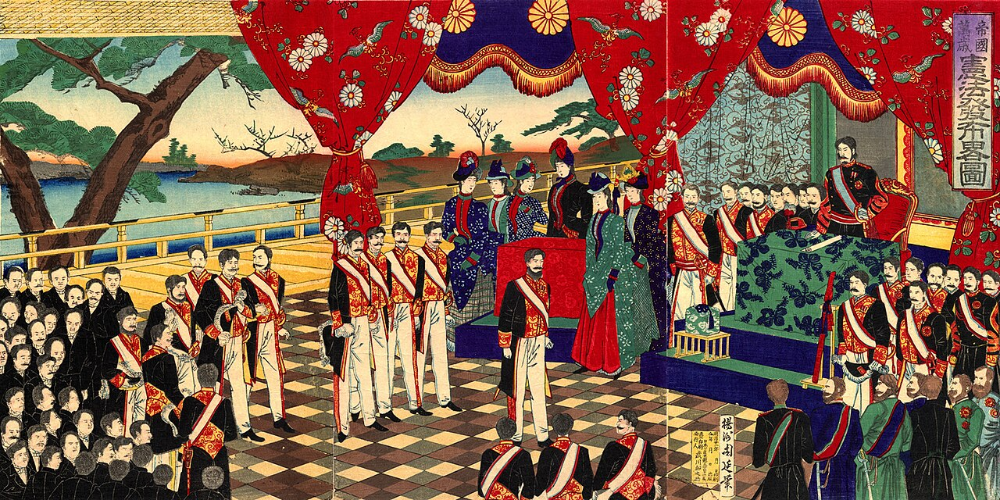
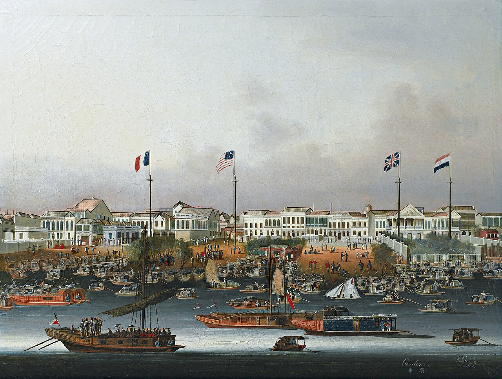
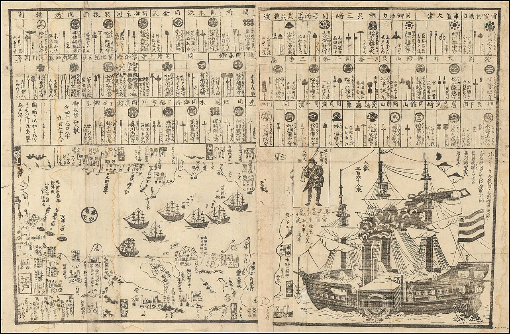
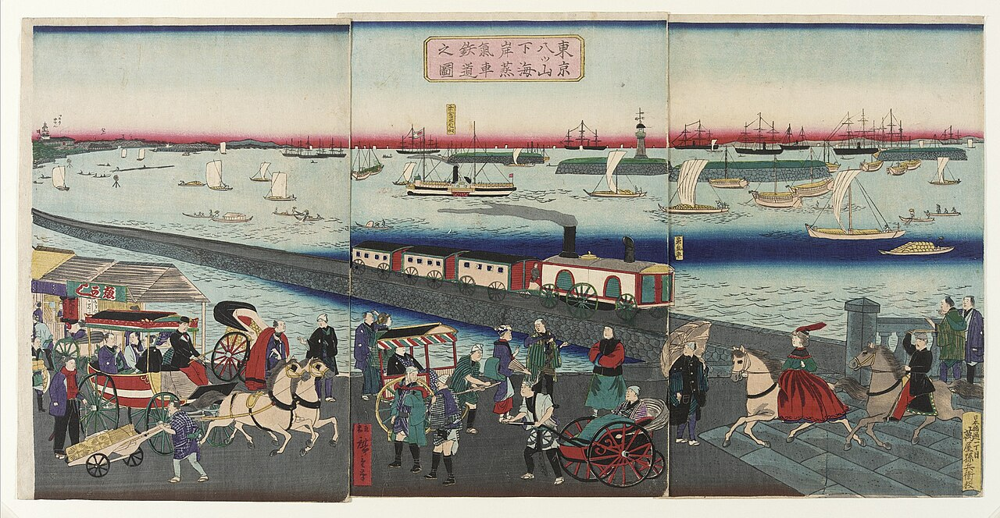
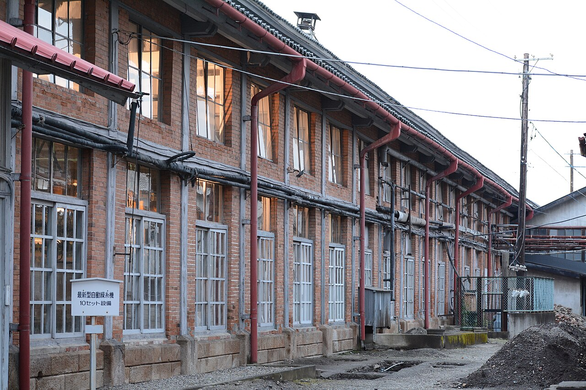
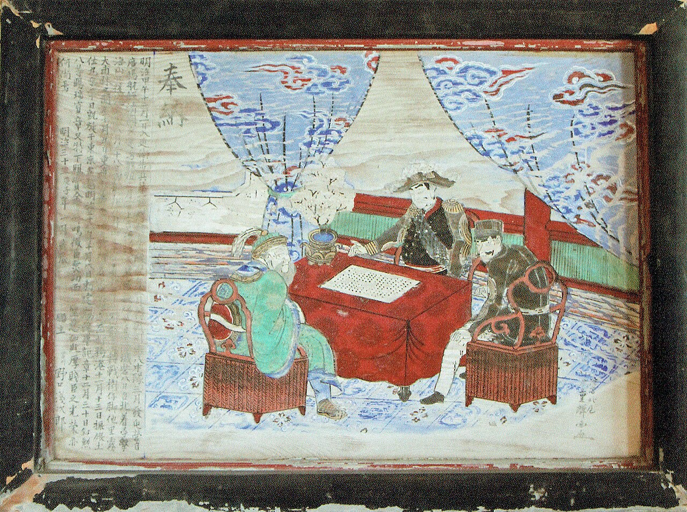

江戸、1842年。幕府は17年前から続けてきた「外国の船は打ち払え」という命令（異国船打払令）を取り下げ、困っている船には水や燃料を与えることにしました。
きっかけは、海の向こうの知らせでした。日本が大国と見ていた隣の清（いまの中国）が、イギリスとの戦争に大敗したのです。清も日本も、このあと欧米に港を開かされます。それなのに、日本は植民地にされませんでした。日本は、なぜ植民地にされなかったのでしょうか。

清（いまの中国）と日本は、どちらも欧米に同じ形の不平等条約を結ばされました。けれども清は土地を削られ、日本はやがて植民地を持つ側に回ります。港の地図と70年の年表で、2つの国がどこで分かれたのかをたどってみませんか。
前回は、1870年ごろから1914年までに、アフリカやアジアの多くの土地が、ヨーロッパの国々の植民地にされた話でした。工業の道具で力の差が開き、国々は先を争いました。独立を守れたのは、シャム（いまのタイ）やエチオピアなど、ひと握りの国だけでした。
江戸、1842年。幕府は17年前から続けてきた「外国の船は打ち払え」という命令（異国船打払令）を取り下げ、困っている船には水や燃料を与えることにしました。
きっかけは、海の向こうの知らせでした。日本が大国と見ていた隣の清（いまの中国）が、イギリスとの戦争に大敗したのです。清も日本も、このあと欧米に港を開かされます。それなのに、日本は植民地にされませんでした。日本は、なぜ植民地にされなかったのでしょうか。
清の敗北を見た日本が、列強の目が清に向くうちに国を作り変えたから。
19世紀のはじめ、イギリスでは清の茶が大人気でした。イギリスの商人は、植民地インドで作った麻薬のアヘンを清に売りこみます。アヘンにおぼれる人が増え、かつて世界の銀を吸い寄せた中国から、今度は代金の銀が流れ出していきました。
1839年、清の役人の林則徐は、広州で外国の商人からアヘン約1,420トンを取り上げ、海辺で処分します。イギリスは艦隊を送り、アヘン戦争が始まりました。

1842年8月29日、清は南京条約を結ばされました。香港島をイギリスに渡し、広州・厦門・福州・寧波・上海の5つの港を開きます。関税（輸入品にかける税）の率も、清だけでは決められなくなりました。
翌年の取り決めでは、イギリス人が清で罪を犯しても、清の法で裁けない「領事裁判権」も認めさせられます。こうした一方的な条約は、のちに「不平等条約」と呼ばれました（Fig.01）。
清の苦しみは続きます。1850〜64年の太平天国の乱という内乱では、少なく見ても2,000万〜3,000万人が亡くなったと推計されています。1856〜60年の2度目のアヘン戦争（アロー戦争）では、イギリスとフランスの軍が都の北京に入りました。
清は1861年から、西洋式の兵器工場や学校を作る「洋務運動」を進めます。ただ、政府の多くは古い儒教（孔子の教え）の考えを守り、政治や社会のしくみまでは変えようとしませんでした。
1853年7月8日、アメリカの軍人ペリーが4隻の軍艦を率いて、江戸湾の入り口の浦賀に現れました。のちに「黒船」と呼ばれる船です。翌1854年、幕府は日米和親条約を結び、下田と箱館（いまの函館）の港を開きました。

1858年7月29日には、日米修好通商条約を結びます。横浜・長崎・新潟・神戸などで商いを認め、領事裁判権を与え、関税も日本だけでは決められない──清と同じ形の不平等条約でした。同じ年、イギリスなど4か国とも同じような条約を結びます。
清がアヘン戦争で大敗したことは、日本でも広く知られていました。条約に応じた幕府の役人の多くも、力の差を知って戦争を避けようとしたといわれます。
けれども、国の中は大きく揺れました。幕府をたおそうとする薩摩藩（いまの鹿児島県）や長州藩（いまの山口県）などが力をつけ、1868年、天皇を中心とする新しい政府ができます。明治維新です。
新しい政府は、まず国を1つにまとめました。1871年、大名が治めていた261の藩をなくし、政府が送る役人の治める県に置き換えます（廃藩置県）。
同じ年の暮れ、政府の幹部や留学生ら約100人が欧米へ向かいました（岩倉使節団）。目的の1つは条約を改める交渉でしたが、うまくいきません。イギリスでは、まず法律を整えるよう求められました。
そこから作り変えが一気に進みます。1872年に学校の制度（学制）を定め、新橋〜横浜に鉄道を開き、群馬県の富岡にフランスの機械を入れた製糸場（生糸をつくる工場）を開きました。1873年には、武士に限らず国民から兵を集める徴兵令を出します。


1886年、イギリスの船ノルマントン号が紀州（いまの和歌山県）の沖で沈み、日本人の乗客25人は全員が亡くなりました。イギリスの領事（外国で自国民の世話をする役人）の裁判は、はじめ船長を無罪にしました。人々は怒り、やり直しの裁判でも禁錮3か月にとどまります。この怒りが、条約を改める声を強めました。
1889年2月11日、ドイツなどの憲法を手本にした大日本帝国憲法が定められ、翌年には議会が開かれました。扉の絵は、憲法を発布する式をえがいた錦絵です。
そして1894年7月16日、イギリスとの新しい条約で、領事裁判権をなくすことが決まります（1899年から実施）。関税を自分で決める権利（関税自主権）を取り戻したのは、1911年でした（Fig.02）。
日本だけが特別にすぐれていた、というわけではありません。研究者のあいだでは、いくつもの条件が重なったという見方が多く、どれを重く見るかは分かれます。
清の大敗を早くから知り、明治維新から20年ほどで、憲法・議会・学校・軍を整えた。
寺子屋で読み書きを学ぶ人が多く、藩の役人として政治の実務に慣れた武士が多くいた。学制から1年ほどで、寺子屋も生かして1万2,558の小学校ができた。
欧米の関心は大きな市場の清に向いていた。1861年3月、ロシアの軍艦が対馬に居座ると、幕府はイギリスに頼った。イギリスが軍艦を送り、9月にロシア艦は去った。
その国の力は、やがて隣の国々に向けられていきます。
条約を改めようとしていた1876年、日本は軍艦を背に朝鮮にせまり、日本に有利な不平等条約を結ばせています。
1894〜95年、日本は朝鮮をめぐって清と戦い（日清戦争）、1895年4月17日の下関条約で台湾などを手に入れました。
1904〜05年にはロシアと戦い（日露戦争）、ポーツマス条約で樺太の南半分などを得て、同じ1905年に韓国（当時の朝鮮の国名）を保護国（外交を日本にゆだねさせ、その指図を受けさせる国）にします。

そして1910年8月22日、日本は韓国を併合する条約を結び、29日から植民地として治め始めました。植民地にされなかった国は、こうして植民地を広げる側に回っていたのです。
支配された側では抵抗が続きました。台湾では、日本に渡されることに住民が強く抵抗し、日本が島を押さえたのは1895年10月でした。朝鮮でも併合の前の数年、各地で日本に抵抗する義兵の戦いが続いていました。
併合条約について、韓国政府は強いられたもので結んだ時から無効だと主張し、日本政府は当時は有効に結ばれたという立場をとってきました。
中国で、イギリスの領事裁判権が正式になくなった年。日本では1899年だったTreaty of Nanking・Anglo-Japanese Treaty of Commerce and Navigation（Wikipedia）による
日本で小学校に通う子どもの割合（1900年ごろ）。1870年代は約30%だったEducation in the Empire of Japan（Wikipedia）による
下関条約で、清が日本に払うと決めた賠償金（両は清のお金の単位）。銀にして約7,500トンにあたるTreaty of Shimonoseki（Wikipedia）による
1905年8月20日、清をたおそうとする中国の人々が、東京で「中国同盟会」という団体を作りました。中心にいたのは孫文です。のちの革命を動かした仲間の多くも、日本で学んでいた中国の留学生でした。
1911年10月10日、武昌（いまの武漢）で兵士たちが立ち上がります（辛亥革命）。1912年1月1日に中華民国が生まれ、孫文が臨時の大総統になりました。2月12日、6歳の皇帝が位を退き、清は終わります。
日本が関税自主権を取り戻した1911年の秋、清では革命が始まりました。植民地にされまいと急いだ国が、隣の国の革命の準備の場にもなりました。次に教科書で「孫文」や「辛亥革命」の名を見かけたら、その仲間が集まったのが東京だったことを思い出してみてください。
日本が韓国を併合したころ、列強は植民地を奪い合いながら、たがいに同盟を結んで身構えていました。日本も1902年、イギリスと同盟を結んでいます。1914年、その張りつめた糸が切れ、ヨーロッパで大きな戦争が始まりました。第一次世界大戦は、なぜ止められなかったのでしょうか。